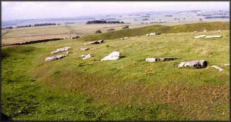
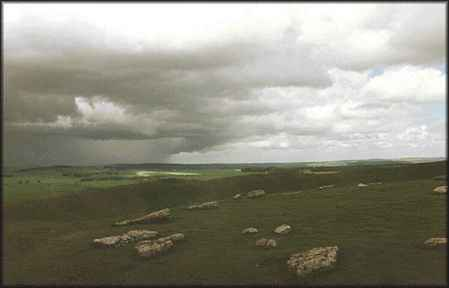

Arbor Low
Arbor Low
Derbyshire

Arbor Low is located in the Peak District of Derbyshire and is surrounded by circular earthworks. Most of the stones are recumbent in this important stone circle, the focus of an intricate network of ley lines. It is to be found in Derbyshire and is surrounded by circular earthworks. This stone circle and henge is known as The 'Stonehenge of the North'. The word Arbor, in this case, has the old meaning of the central axis or central support. The views from the circle are dramatic and its location, 1230 feet above sea level, produces the feeling of being on top of the world. The henge, consisting of a 7ft high bank with a 6ft deep ditch cut into a sloping hilltop with 2 entrances at the NW and SE, provides a tight enclosure for the stone circle. Around 50 recumbent limestones lie inside the henge forming a circle at the centre of which is an arrangement of similar stones. It has been dated to around 3000 B.C.E.
